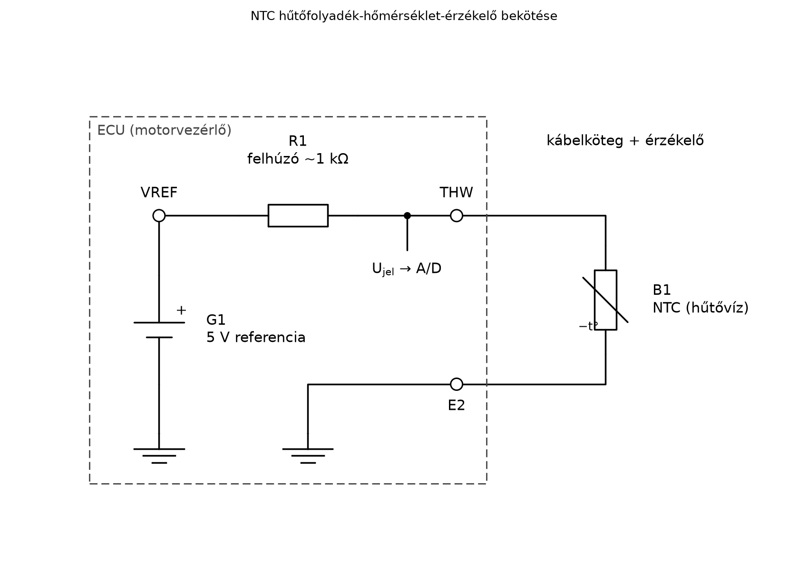

Egy hideg reggelen a benzinmotor nehezen indul, alapjáraton remeg, és a rendszerteszter hibakódot tárol: a motorfordulatszám-jeladó jele hiányzik. Egy másik autón a műszerfalon világít a motorszimbólum, és a diagnosztikai műszer élőadat-listájában a hűtőfolyadék-hőmérséklet érzékelő értéke -ot mutat, miközben a motor meleg. A szerelő ezekben az esetekben nem a szoftverben keresi a hibát, hanem az érzékelők bekötését, tápfeszültségét, testét és jelalakját vizsgálja. Az elektronikus motorirányítás „szemét és fülét” érzékelők és jeladók alkotják: ha az ECU téves vagy hiányzó jelet kap, a befecskendezés, a gyújtás és a keverékképzés rossz lesz, esetleg a motor leáll. Ebben az alfejezetben a motorirányítás leggyakoribb érzékelőit vesszük végig úgy, hogy a jelalakot multiméterrel és oszcilloszkóppal is ellenőrizni tudd.
Képzelj el egy motortér-rajzot, amelyen az érzékelők a motorirányítási rendszer „érzékszerveiként” vannak megjelölve: a főtengely jeladó a lendkerék fogaskoszorújánál, a vezérműtengely-jeladó a vezérműfedélnél, a fojtószelep- és gázpedál-érzékelő a szívócső és a pedálbox felőli oldalon, az NTC hőmérséklet-érzékelők a hűtőrendszer csöveiben, a MAP vagy HFM a szívócsőben vagy a légszűrő után, a kopogásérzékelő a hengertömb oldalán, a lambdaszonda pedig a kipufogócsőben. Mindegyiknek az a feladata, hogy a fizikai mennyiséget – fordulatszám, hőmérséklet, nyomás, légtömeg, rezgés, oxigénkoncentráció – a motorvezérlő számára elektromos jellé alakítsa. A jelet az ECU feldolgozza, és a beavatkozókat (injektor, gyújtótekercs, fojtószelep, EGR-szelep) szabályozza.
Az ábra a fenti leírást rajzban mutatja: a szívóágon a beszívottlevegő-hőmérséklet-érzékelő, a légtömegmérő, a fojtószelep-egység és a szívócsőnyomás-érzékelő, a motoron a főtengely- és a vezérműtengely-jeladó, a hűtőfolyadék-NTC, a kopogásérzékelő, az olajnyomás-kapcsoló és a rail nyomásérzékelő, a kipufogóágon a katalizátor előtti és utáni lambdaszonda ül; a gázpedál-érzékelő az utastérben van. A HTML-változatban az érzékelőre mutatva megjelenik a neve és a jeltípusa.
Definíció. Az érzékelő (sensor) olyan eszköz, amely egy fizikai vagy kémiai mennyiséget mérhető, általában villamos jellé alakít. A jeladó (pickup, transmitter) a motorirányításban sokszor ugyanazt jelenti, de gyakran a fordulatszám- és helyzetjeladókra használjuk; a jele nem folytonos mennyiséget hordoz, hanem foganként vagy pozíciójelként impulzusokat ad.
Definíció. A passzív érzékelő saját tápfeszültség nélkül működik, a jelet maga a fizikai hatás hozza létre (pl. induktív jeladó, piezoelektromos kopogásérzékelő). Az aktív érzékelő külső tápfeszültséget kap, és a jelét ebből állítja elő (pl. Hall-jeladó, MAP, HFM). Az NTC és a potenciométer ún. passzív, parametrikus érzékelő: nem kelt jelet és nincs saját elektronikája, hanem az ellenállása változik; az ECU referenciafeszültséggel (felhúzó ellenálláson át) teszi mérhetővé. A gyakorlatban aktív érzékelőnél mindig ellenőrizni kell a tápfeszültséget, a testet és a jelvezetéket; kétvezetékes NTC-n tápfeszültség helyett a jelvezeték üresjárási feszültségét (kb. 5 V) és a testet mérjük.
Összefüggés. Az ECU analóg bemenetein a mérési tartományt gyakran feszültségosztóval alakítják ki. Egy felhúzó ellenállással () sorba kötött NTC érzékelőn a jel:
A képlet mutatja, hogy a hőmérséklet növekedésével az NTC ellenállása csökken, ezért a jel is csökken. Ezt használjuk a hőmérséklet-érzékelőknél.
Összefüggés. A fogaskerék-alapú fordulatszám-jeladó frekvenciája:
ahol a fordulatszám (1/min), a számlált fogak/impulzusok száma egy fordulatra. Például egy 60−2 fogazású fogaskeréknél fogas impulzus fordulatonként.
A motorirányítás leggyakrabban a főtengelyen elhelyezett fogaskerékről vagy impulzuskerékről kapja a fordulatszámjelet és a szinkronpozíciót. A fogazás gyakori típusa a 60−2 fog, azaz 60 fognyi helyből kettő fog hiányzik; a hiányzó fogak helyét az ECU szinkronreferenciaként használja. A jeladó lehet induktív (passzív, kétvezetékes) vagy Hall-elvű (aktív, tápfeszültséggel).
Az induktív jeladó egy lágyvasmagos tekercs, amely a forgó fogaskerék előtt helyezkedik el. A fog elhaladásakor a mágneses fluxus megváltozik, ezért a tekercsben feszültség indukálódik. A jel körülbelül szinuszszerű, amplitúdója a fordulatszámmal nő, ezért alacsony fordulatszámnál (indítózásnál) kisebb, magas fordulatszámon nagyobb. A hiányzó fogaknál a jel egy periódust kihagy. A tipikus mérési érték oszcilloszkóppal: néhány száz millivolt indítózásnál, több volt járó motornál; a pontos érték gyártófüggő (ellenőrizendő: gyártói jelalak- és mérési adat). Az induktív jeladó előnye az egyszerű felépítés; hátránya, hogy a jel amplitúdója fordulatszám-függő, a légrésre érzékeny, és a polaritása fontos.
A Hall-jeladó egy Hall-elemet és jelformáló elektronikát tartalmazó aktív érzékelő. A fogaskerék fogainak elhaladásakor a mágneses tér megváltozik, az elektronika pedig tiszta, négyszögjelű kimenetet ad, amelynek amplitúdója közel a tápfeszültséghez (gyakran 5 V vagy 12 V logika), és alacsony fordulatszámon is megbízható. A Hall-jeladó jellemzően három vezetékes: tápfeszültség (például 5 V), test és jel. A magnetorezisztív jeladó a mágneses tértől függő ellenállásváltozást használja, és szintén aktív, digitális vagy analóg jelet adó érzékelő. A kerékfordulatszám-jeladók hasonló elven működnek, de jellemzően az ABS/ESP kerékfordulatszám-jeleit szolgáltatják; ezeket a fékrendszernél tárgyaljuk.
A vezérműtengely-jeladó feladata a hengerazonosítás: a motorirányításnak tudnia kell, hogy a szívó ütem vagy a kompresszió ütem következik-e, különösen a hengerenkénti befecskendezésnél és a szelektív gyújtásnál. A vezérműtengely-jeladó sokszor félfordulatos vagy egyfordulatos fázisjelet ad; a motorvezérlő a főtengely és a vezérműtengely jeleit együtt értékeli. Ha a vezérműtengely-jel hiányzik, a motor sok esetben nem indul, vagy csak vészüzemmódban jár.
Az ábra felső részén az induktív jeladó jele 0 V körül szimmetrikusan leng (oszcilloszkópon negatív félhullám is látszik), a hiányzó fogaknál pedig nagyobb amplitúdójú, hosszabb lengést ad – a szerelő ezt a szinkronrést keresi. Az alsó rész a Hall-jeladó négyszögjele, amely a résnél kimarad. A fogosztás-frekvencia (3000 1/min-nél 3000 Hz); az ECU által számolt átlagos impulzusfrekvencia a ténylegesen meglévő foggal (2900 Hz), ahogy a 2. példa is számol. Az interaktív változatban a fordulatszám és a jeladó típusa állítható, és élőben látszik mindkét frekvencia.
A fojtószelepállás-potenciométer (TPS, throttle position sensor) a fojtószelep tengelyére szerelt csúszókapcsolós potenciométer, amely a fojtószelep szögével arányos feszültséget ad. A tipikus jel üresjáratban 0,4–0,7 V, teljesen nyitott fojtószelepnél 3,5–4,5 V körüli; ezek tanulási példák (ellenőrizendő: gyártói adat). A potenciométer mellett régebbi rendszerekben kapcsolós változat is előfordult: itt a jelek üresjárati, részterheléses és teljes terheléses állást mutattak. A modern elektronikus fojtószelep-egység (E-gas) a fojtószelep tengelyén két potenciométert használ, hogy az ECU a jeleket összehasonlíthassa; a két jel gyakran ellentétes menetű vagy eltérő meredekségű. Az egyik jel például 0,5–4,5 V, a másik 4,5–0,5 V irányban változhat. A gázpedál-érzékelő (APP, accelerator pedal position) a vezető kívánságát adja meg: a pedálmodulban szintén legalább két potenciométer vagy Hall-érzékelő van, és a kettős jel a biztonság miatt szükséges. Ha az egyik jel kilóg a tartományból, vagy a két jel nem felel meg egymásnak, az ECU hibát tárol, és a motor korlátozott teljesítménnyel járhat.
A levegőhőmérséklet- és hűtőfolyadék-hőmérséklet-érzékelő általában NTC (negative temperature coefficient) termisztor: melegedés hatására az ellenállása csökken. Az ECU egy belső felhúzó ellenálláson keresztül 5 V referenciafeszültséget kapcsol, és méri az NTC osztott feszültségét. A tipikus hűtőfolyadék-NTC ellenállása -on körülbelül , -on körülbelül – ezek példaértékek (ellenőrizendő: gyártói táblázat). A hűtőfolyadék-érzékelő jele befolyásolja a hidegindítási dúsítást, az alapjáratot, a ventilátor-vezérlést és az emissziót. A levegőhőmérséklet-jel a beszívott levegő sűrűségének korrekcióját szolgálja.
A szívócsőnyomás-érzékelő (MAP, manifold absolute pressure) a szívócsőben uralkodó abszolút nyomást méri, és a motorvezérlő a nyomásból, hőmérsékletből és fordulatszámból becsüli a hengerekbe jutó levegő tömegét. A MAP-érzékelő aktív, általában 5 V tápfeszültséget kap; a jel feszültsége a nyomással közel lineárisan nő. Egy tipikus jel üresjáratban, erős vákuumnál –, teljes terhelés, közel atmoszférikus nyomás közelségében – lehet (ellenőrizendő: gyártói adat). A MAP-érzékelő gyakori a turbós motoroknál is.
A légtömegmérő (HFM, hot-film air mass meter) a ténylegesen beszívott levegő tömegáramát méri. A mérőcsőben egy fűtött hőfilm- vagy hőszál elem van; a levegő hűti, az elektronika pedig az áramlás fenntartásához szükséges fűtőteljesítményt vagy a hőmérsékletkülönbséget alakítja jellé. A jel általában – közötti analóg feszültség, amely a légtömegárammal nő. A HFM méri a valódi levegőtömeg-áramot, ezért a motorterhelés-számítás pontosabb. A régi légmennyiségmérő (például lengőcsappantyús LMM) egy potenciométerrel összekötött csappantyút használt, amelyet a beszívott levegő elmozdított; a potenciométer jele a csappantyú szögét, azaz közelítőleg a levegő térfogatáramát képviselte. A modern rendszerekben a HFM a jellemző.
A kopogásérzékelő a motor kopogását (detonációs égést) érzékeli. Szerkezete általában piezoelektromos kristályt tartalmazó érzékelő, amelyet a hengertömbhöz rögzítenek, előírt nyomatékkal. A kopogás a hengerblokk nagyfrekvenciás rezgéseit kelti; a piezoelem ezt feszültségjellé alakítja. Az ECU jellemzően az égés után, szűrt frekvenciasávban figyeli a jel amplitúdóját, és kopogás észlelésekor késlelteti a gyújtást. A kopogásérzékelő passzív, kétvezetékes érzékelő, a jel széles sávú, tüskeszerű feszültségcsomag. Oszcilloszkóppal kopogáskor a jel zajszintje megnő; a pontos szűrési és küszöbértékek gyártófüggők (ellenőrizendő: gyártói diagnosztikai útmutató).
A lambdaszonda a kipufogógáz oxigéntartalmát méri, és ezzel a keverék dús vagy szegény voltát jelzi. A hagyományos keskenysávú lambdaszonda (feszültségszonda) általában cirkónium-dioxid kerámiát használ, amely magas hőmérsékleten oxigénion-vezetővé válik. A kipufogógáz-oldali és a külső referencia-oxigénkoncentráció különbsége feszültséget hoz létre. Dús keveréknél a jel magas, körülbelül –, szegény keveréknél alacsony, körülbelül –. A szabályzás a körüli átmenet körül ingadozik; a jel jellegzetes „lambda-szabályzási” négyszögszerű mintázatot ad. A fűtött lambdaszonda gyorsabban éri el üzemi hőmérsékletét. A szélessávú lambdaszonda (áram-szonda) nagyobb mérési tartományban, az oxigénkoncentráció feszültség helyett szivattyúárammal arányos jelét adja; a motorirányítás nagy pontosságú szabályzásra használja. A lambdaszonda jeleit a kipufogógáz-utókezelés fejezetben is használjuk.
A MAP mellett a motorirányításban több nyomásérzékelő is található: a közös nyomásterű (common rail) dízelrendszer railnyomás-érzékelője, az olajnyomás-érzékelő, a klímarendszer nyomásérzékelője és a turbónyomás-érzékelő. Ezek gyakran piezorezisztív vagy kapacitív elvű aktív érzékelők, 5 V tápfeszültséggel és közel lineáris feszültségjellel. A railnyomás-érzékelő például kb. 0,5 V-ot ad nyomásmentes állapotban és kb. 4,5 V-ot a mérési tartomány felső határán; a 0,5 V alatti és 4,5 V feletti jelet az ECU áramkörhibaként (testzárlat, szakadás, tápzárlat) értékeli (ellenőrizendő: gyártói adat). A jelekből az ECU a befecskendezési nyomást szabályozza.
A metszetek a fenti működési elveket mutatják: az induktív jeladóban állandó mágnes, tekercs és lágyvas pólus áll a fogaskoszorú előtt, a Hall-jeladóban Hall-IC és mágnes, háromvezetékes csatlakozóval; az NTC-pasztilla az érzékelőház hegyében ül; a légtömegmérőben a fűtött film előtt és után egy-egy hőmérséklet-érzékelő van; a kopogásérzékelő piezokerámiáját a szeizmikus tömeg terheli, a rögzítőcsavar nyomatéka számít; a lambdaszonda ZrO₂-kerámiájának két oldalán egy-egy platinaelektróda van, kívül a kipufogógáz, belül a referencia-levegő. A HTML-változatban érzékelőnként külön nézet és rövid magyarázat választható.
Az érzékelők vizsgálatának közös kérdése: van-e tápfeszültség, jó-e a test, és megérkezik-e a jel? Az alábbi áramútrajz egy NTC hűtőfolyadék-hőmérséklet-érzékelő tipikus bekötését mutatja.

Az ECU a VREF ponton 5 V referenciafeszültséget ad (a referenciaforrás + pólusa). A felhúzó ellenállás és az NTC osztója a THW ponton mérhető jelfeszültséget adja, ezt az ECU A/D átalakítója méri. Az E2 pont az érzékelő testje, amely az ECU-n belül záródik a forrás − pólusához. A szaggatott keret az ECU határa: az R1 és a referencia belül van, az NTC és a vezetékek kívül, a kábelkötegben – ezért a THW és az E2 kapcson mérve dönthető el, hogy a hiba a vezérlőben vagy a vezetéken, illetve az érzékelőben van. Ha a vezeték megszakad, az ECU általában 5 V-hoz közeli jelet lát, mert a THW ponton a felhúzó ellenállás a test irányában nem terhel. Ha a vezeték testzárlatos, a jel 0 V közeli. Ugyanígy kell gondolkodni minden érzékelőnél: a jelből lehet következtetni a bekötés hibájára.
1. példa (NTC feszültségosztó számítása). Adott: , , a hűtőfolyadék-hőmérséklet-érzékelő ellenállása -on . Keresett: a THW pont feszültsége. Képlet: . Behelyettesítés:
Ellenőrzés: hideg motornál az NTC nagy ellenállású, a jel magas, ami az ECU-nak hidegindítási dúsítást jelez.
2. példa (Fordulatszám-jeladó frekvenciája). Adott: 60−2 fogazású főtengely jeladó kerék, fogas impulzus; a motor fordulatszáma . Keresett: a jel frekvenciája. Képlet: . Behelyettesítés:
A periódusidő . Ellenőrzés: alapjáraton, -nél ; az oszcilloszkóp időalapját ekkor -os tartományra kell állítani.
Előírás. Az érzékelők mérésére a gyártó javítási útmutatójában megadott mérési pontok, tápfeszültség-, ellenállás- és jelalak-értékek a mérvadók. A rajzon használt VREF, THW, E2 jelölések gyártói ECU-lábnevek (példaként), nem szabványos kapocsjelek; a szabványos járművillamossági kapocsszámok (DIN 72552: 15, 30, 31 …) az érzékelők jelvezetékére nem vonatkoznak. A tényleges lábkiosztást mindig a jármű áramútrajza határozza meg (ellenőrizendő: gyártói rajz).
Minőségellenőrzés. Az érzékelő vizsgálatakor a következő sorrendet ajánlott tartani:
Biztonsági korlát. A feladat tanműhelyi környezetre, oktató felügyeletére és a gyártói javítási utasítás betartására vonatkozik; a megadott értékek tanulási példák.
Figyelem. Mérés előtt a gyújtást csak az adott mérés idejére kapcsold be, a jármű váltóját tedd üresbe vagy P állásba, és a járó motornál végzett mérésnél használd a kipufogógáz-elszívást. A mozgó alkatrészektől, ventilátortól és forró kipufogótól tarts távolságot.
Ügyfélpanasz: egy négyhengeres szívó benzinmotor nehezen indul, a motor visszadob néha, és a diagnosztikai műszer a főtengely-jeladó jele körüli hibát tárol. A műhelyben a szerelő először a jeladó csatlakozóját vizsgálja, majd oszcilloszkóppal az induktív jeladó jelét nézi indítózás közben. A jel amplitúdója nagyon alacsony, és a hiányzó fogak helye nem ismerhető fel. A szerelő ellenőrzi a légrést a jeladó és a fogaskerék között; a jeladó rögzítése meglazult, ezért a légrés megnőtt. A jeladót a gyártói nyomatékkal rögzíti, a légrést hézagmérővel beállítja. Indítózás után a jel amplitúdója a várt tartományba kerül, a hiányzó fogak helye jól látható, és a motor egyenletesen indul. Tanulság: az időszakos jelhibák egy része mechanikai rögzítési probléma, nem maga az érzékelő elektronikája.
Hibakeresési eset. Tünet: a hűtőfolyadék-hőmérséklet-érzékelő értéke a rendszerteszterben , a motor hidegindításkor dús keverékkel jár és füstöl, a ventilátor folyamatosan forog. Hipotézis: az NTC-kör szakadt. Mérés: az érzékelő csatlakozóján a THW pont feszültsége közel 5 V, miközben a csatlakoztatott NTC-ellenállásnak adott hőmérsékleten kisebb értéket kellene adnia. A csatlakozó lehúzása után az érzékelő ellenállása szakadást mutat; az érzékelő belső termisztorja tönkrement. Javítás: új érzékelő beépítése, a csatlakozó tömítésének és a hűtőfolyadék-szintnek az ellenőrzése. Próbaúton a hőmérsékletjel visszatér, a ventilátor megfelelően vezérel. Megelőzés: fagyálló hűtőfolyadék használata, mert a korrozív közeg roncsolhatja a hűtőkör érzékelőit.
A jeladó polaritásának felcserélése. Induktív jeladónál a két vezeték felcserélésével a jel polaritása megfordul, ami a motorindítást és a pontos szöghelyzet-felismerést zavarhatja. A javításnál mindig a gyártói bekötési rajzot kell követni, és a vezetékek színeit, valamint a jelalak irányát ellenőrizni kell.
A Hall-jeladó jelét multiméterrel DC feszültségként átlagolva félreértelmezni. A Hall-jeladó négyszögjele; multiméterrel mért DC feszültsége a kitöltési tényezőtől függ, és nem ad valódi jelalakot. A helyes gyakorlat az oszcilloszkópos jelmegfigyelés: a jel amplitúdójának, élviszonyainak és a hiányzó fogak szinkronhelyzetének ellenőrzése.
Az NTC ellenállását nem a mérés pillanatnyi hőmérsékletéhez tartozó táblázati értékkel összevetni. A hőmérséklet-függő ellenállást mindig a gyártói hőmérsékleti táblázattal kell összevetni, a valós hőmérséklettel mért állapotban. Ha a szerelő hideg motornál az NTC-t szobahőmérsékleten méri, de a specifikációt meleg motorra értelmezi, tévesen cserélhet ki jó érzékelőt.
Önellenőrzés – válaszok
1. feladat (A). Sorold fel, mi a különbség az induktív és a Hall-elvű fordulatszám-jeladó között a tápfeszültség, a jelalak és az amplitúdó-fordulatszám függés tekintetében!
2. feladat (A). Nevezd meg, miért van szükség vezérműtengely-jeladóra egy hengerenkénti befecskendezéses motornál!
3. feladat (B). Egy 60−2 fogazású jeladó kereke fogas. A fordulatszám . Számítsd ki a jel frekvenciáját és periódusidejét!
4. feladat (B). Az áramköri rajz alapján magyarázd el, mi történik a THW pont feszültségével, ha a NTC érzékelő testvezetéke megszakad! Mit mutat ekkor a diagnosztika?
5. feladat (C). Egy MAP-érzékelő jelét vizsgálod. A gyártó szerint a mérési tartomány – abszolút nyomás között – lineáris. A mért jelfeszültség . Becsüld meg a szívócsőnyomást! Mutasd meg a számítást!
6. feladat (D). Egy motor alapjáraton remeg, és a diagnosztikai műszer a fojtószelep-érzékelő hibáját tárolja. A TPS jel üres járatban , teljesen nyitva . Mi a hiba valószínű oka, és mit kell ellenőrizned?
1. Az induktív jeladó passzív, kétvezetékes, a jele közel szinuszszerű, amplitúdója a fordulatszámmal nő. A Hall-elvű aktív, tápfeszültséget igényel, a jele négyszög, amplitúdója közel állandó, alacsony fordulatszámon is jó.
2. A vezérműtengely-jeladó a hengerazonosítást teszi lehetővé: az ECU a főtengely szöghelyzete mellett tudja, hogy az egyes hengerek a szívó vagy a kompresszió ütemben vannak-e, így a hengerenkénti befecskendezést és a szelektív gyújtást megfelelően vezérli.
3. Képlet: . Behelyettesítve: . Periódusidő: . Ellenőrzés: az érték alapján az oszcilloszkóp időalapját néhány ms-os tartományra állítjuk.
4. Ha az NTC testvezetéke megszakad, a THW ponton nem folyik áram; a felhúzó ellenálláson nincs feszültségesés, ezért a THW pont jelfeszültsége közel 5 V-ot mutat. A diagnosztikai műszer ezt magas ellenállásnak, azaz nagyon alacsony hőmérsékletnek értelmezi (például ), mert a jel 5 V-hoz közeli.
5. A lineáris jelleggörbe képlete: . Behelyettesítve: . Ellenőrzés: 2,5 V a feszültségtartomány közepén van, a nyomás is a tartomány közepén, 60 kPa.
6. A TPS jel üres járatban 0,8 V, teljesen nyitott fojtószelepnél 1,3 V, tehát a mérési tartomány nagyon beszűkült. Ez leggyakrabban a potenciométer csúszópályájának kopását, a tápfeszültség hibáját vagy a test gyenge érintkezését jelzi. Ellenőrizni kell a TPS tápfeszültségét (5 V referencia), a testet, valamint a fojtószelep mechanikus működését, és szükség esetén a gyártó szerint cserélni az érzékelőt, illetve az alapjáratot és a fojtószelep alaphelyzetet tanítani.
Az érzékelők és jeladók a motorirányítás érzékszervei. A passzív érzékelők (induktív jeladó, kopogásérzékelő) saját jelet keltenek, az aktívak (Hall-jeladó, MAP, HFM) tápfeszültséggel dolgoznak; az NTC passzív, parametrikus érzékelő, amelynek ellenállását az ECU referenciafeszültséggel méri. A főtengely-jeladó az induktív vagy Hall-elvű 60−2 fogazásról a fordulatszámot és a főtengely szöghelyzetét adja; a vezérműtengely-jeladó a hengerazonosítást biztosítja. A fojtószelep-potenciométer a terhelést, a gázpedál-érzékelő a vezetői szándékot két redundáns jellel jelzi. Az NTC hőmérséklet-érzékelő ellenállása melegedéssel csökken, a kapcsolt jelfeszültség ezért csökken. A MAP a szívócsőnyomást, a HFM a tényleges légtömegáramot méri. A kopogásérzékelő piezo-elvű rezgésjeladó, a lambdaszonda a kipufogógáz oxigéntartalmát jelzi. Továbbvitt eredmény. Az itt bemutatott bekötési logikát (táp, test, jel), jelalakokat és vizsgálati sorrendet használjuk a Beavatkozók: injektorok, gyújtótekercsek, fojtószelep, alapjárat-szabályozó, EGR-szelep alfejezetben a beavatkozók rendszerénél, valamint a Jeladók és beavatkozók vizsgálata multiméterrel és oszcilloszkóppal alfejezetben a teljes mérési gyakorlatban.
Az alfejezet az általános járművillamos- és elektronikai mérési alapokra, az MSZ EN 60617 villamos rajzjelekre és a gyártói motorirányítási gyakorlatra épül. A pontos kapocsjelek, feszültségtartományok, ellenállás- és jelalakadatok, valamint a 60−2 fogazás paraméterei gyártó- és típusfüggők, ezért azokat a szövegben jelölt helyeken ellenőrizni kell a jármű gyártói javítási útmutatójában és kapcsolási rajzában.